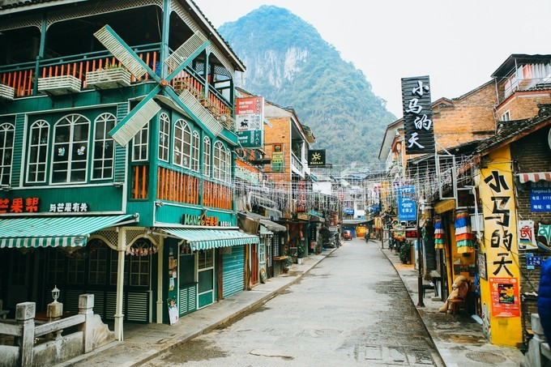

Добро пожаловать в туристическую сеть Гуйлиня~
Добро пожаловать в туристическую сеть Гуйлиня~
издатель:箬叶время：2020-01-23
Линь Хуэйинь однажды сказал: «Некоторые говорят, что вы влюбляетесь в город, потому что в нем живет кто-то, кто вам нравится. На самом деле это не так, влюбляясь в город, возможно, из-за ярких пейзажей в городе, за возлюбленную детства, за знакомый старый дом. Или, может быть, только для города. Так же, как влюбиться в кого-то, иногда вам не нужна никакая причина, нет антецедента, ничего общего с ситуацией, просто любовь.
Яншо — такой город, что люди повсюду очарованы медленным темпом жизни. Вы можете встать на теплом солнышке, взять книгу в руки, погреться на солнышке у реки, неторопливо прогуляться по синей каменистой дороге древних улиц, найти кафе и тихо послушать песни, покататься на велосипеде по окрестностям и сельская местность, найдите газон в оцепенении, и пусть мы все сохраняем медленный темп в быстро меняющейся жизни.
Во-первых, выбрать отель в главном городском районе округа Яншо.Вблизи Западной улицы и парков есть много традиционных отелей и характерных гостиниц.Большинство из них по умеренным ценам между 80-300.Транспорт очень удобный и жизнь удобнее. Советы: Не рекомендуется жить на Вест-Стрит, грохот бара ночью будет влиять на качество сна.
Во-вторых, жить недалеко от реки Юлонг в пригороде, где собираются отели среднего и высокого класса. Большинство отелей типа "постель и завтрак", разбросанных между горами и реками, оформлены в уникальном стиле. завтрак.Откройте окно, и вы можете получить полный вид на горы.Оглядываясь назад, цена некоторых панорамных номеров высокого класса составляет около 500-1000. Недостатком является то, что после того, как в Яншо будет введен контроль за движением транспорта, галерея Шили и река Юлонг будут закрыты для движения в течение дня, поэтому, если вы бронируете номер в нем, лучше заранее связаться с принимающей стороной, чтобы узнать, сможете ли вы забрать его на месте. контролируемый перекресток, или это будет стоить 60 юаней с человека, чтобы взять правительственную экскурсию Автобус, или тащить багаж туда (картинка красивая и расстояние далеко)
Западная улица, самая известная улица в Яншо, также известная как улица иностранцев, является улицей с наибольшим количеством иностранцев в стране.Все виды магазинов на улице представляют собой сочетание китайского и западного.Каменная дорога. На следующий день было почти девять часов, когда я пошел днем, и вся Западная улица, казалось, погрузилась в тихий сон, как будто дни тянулись так медленно, что даже время не могло выдержать течения.